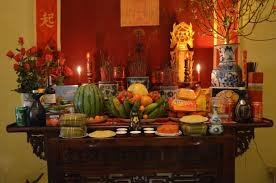
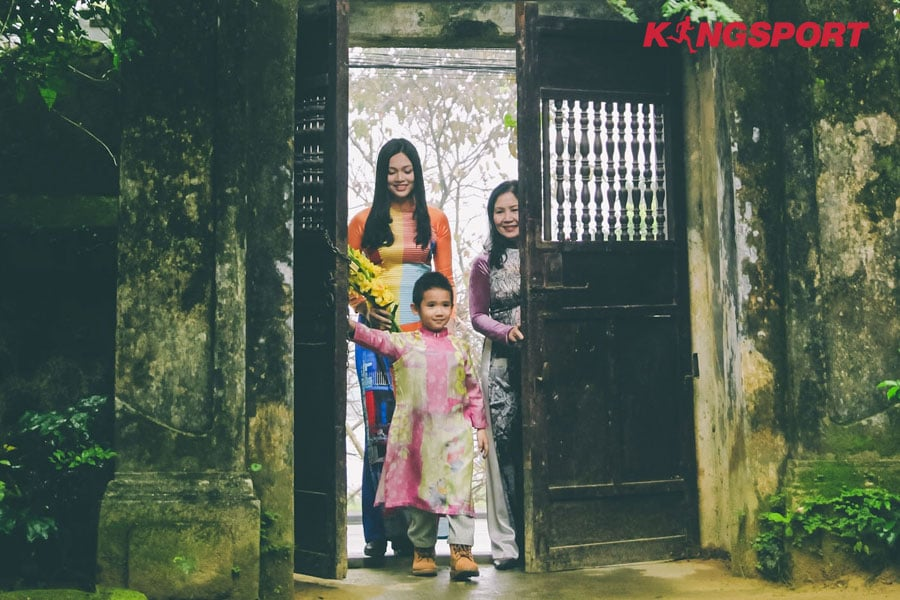
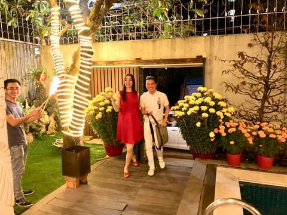
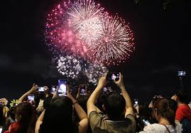
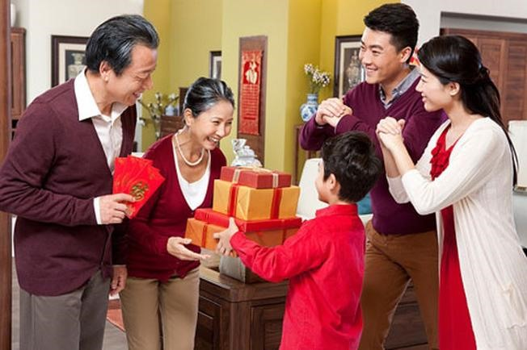
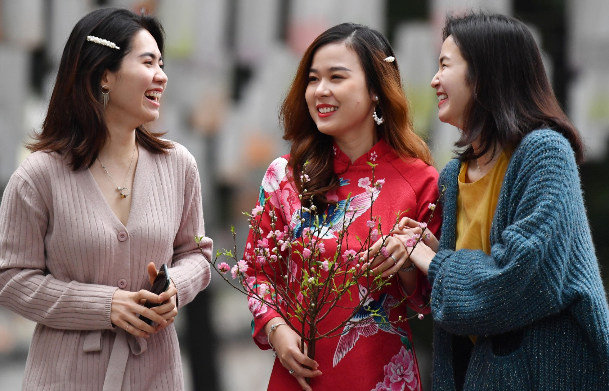
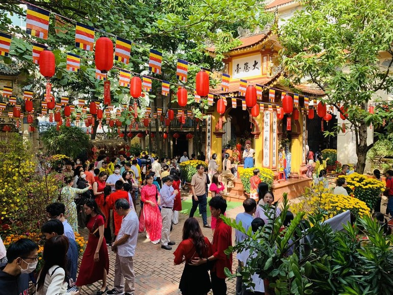
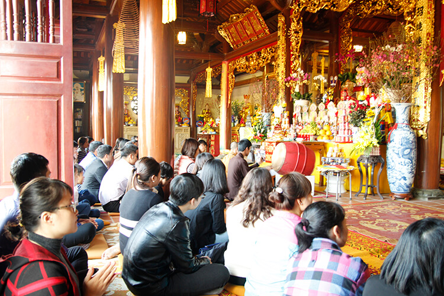

Lễ Hội Tết Nguyên Đán
-
Hình thức tổ chức:
- Đây là hình thức quan trọng nhất trong lễ Tết Nguyên Đán, diễn ra vào đêm giao thừa( trước thời khắc chuyển giao giữa năm cũ và năm mới)
- Các gia định làm lễ cúng ông bà tổ tiên, tỏ lòng biết ơn và cầu mong sự bình an, tài lộc trong năm mới.
- Xông đất là nghi thức đầu năm, khi người đầu tiên bước vào nhà sau Giao thừa được xem là"xông đất", mang lại may mắn, tài lộc cho gia đình.
- Người xông đất thường là người có tuổi đẹp, hợp tuổi với gia chủ.
- Các lễ hội đón xuân có nhiều hình thức tổ chức như bắn pháo hoa, múa lân, úa sư tử, các chương trình văn nghệ....
- Các hoạt động này diễn ra trong suốt Tết để mang đến không khí vui tươi, phấn khơi cho nười dân.
- Trong những ngày lễ Tết, người Việt thường đi thăng bà con, bạn bè và chúc Tết nhau.
- Đây là dịp để mọi người quây quần, gắn kết tình thân, đồng thời cũng là cơ hội để trao nhau những lời chúc tốt đẹp cho một năm mới.
- Trong những ngày đầu năm mới, nhiều gia đình đi lễ chùa, đền để cầu bình an, may mắn và sức khỏe.
- Các lễ hội tôn giáo tại các ngôi chùa, đền thở nổi tiếng như đền Hùng(Phú Thọ), chùa Ba Vàng(Quảng Ninh)thu hút rất đông khách hành hương.
1.Lễ cúng Tổ Tiên
 
2.Phong tục xông đất:
 
3.Lễ hội đón xuân:

4.Thăm bà con, bạn bè:
 
5.Các lễ hội tại đền, chùa:
 